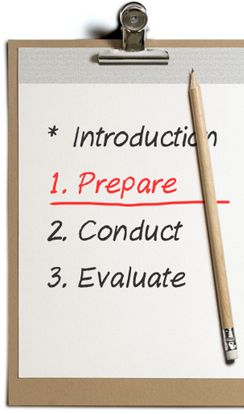

Module Objectives

In the previous lesson, you learnt the importance of doing your homework and preparing yourself well before you conduct an interview.
Interviewing is not just about qualifications, knowledge and skills. Observing and evaluating what candidates do, say, and how they say it are equally important.
 Identify the five stages of an interview process.
Identify the five stages of an interview process.- Ask the right type of question during the various phases of a mock interview.
- Evaluate candidates using the STAR questioning technique.
- Take notes that help you provide effective feedback after an interview.
After completing this module, you will be able to: